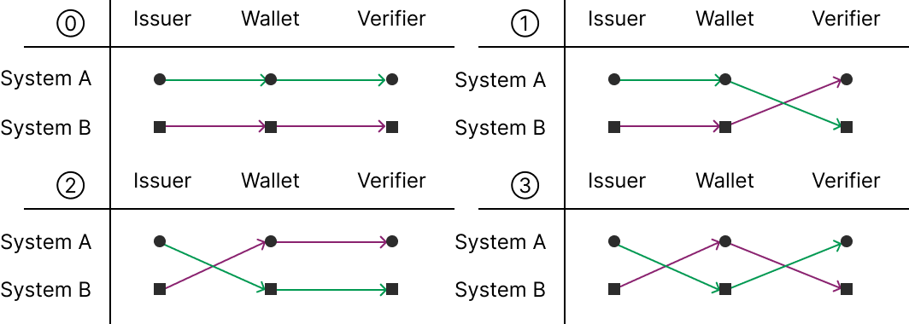

| W3C VCDM | IETF SD-JWT VC | ISO/IEC mDL/mDoc | |
| Taiwan | ✓ | ||
| Bhutan | ✓ | ||
| California (United States) | ✓ | ✓ | |
| United Kingdom | ✓ | ✓ | |
| European Union | ? optional | ✓ Mandatory | ✓ Mandatory |

| TW DIW (Taiwan) | Bhutan NDI | ETDA (Thailand) | MOSIP Inji | |
|---|---|---|---|---|
| Issuance protocol | OpenID4VCI | DIDComm v1 (Credo TS / Aries) | OpenID4VCI | OpenID4VCI |
| Presentation protocol | OpenID4VP | DIDComm v1 + DIF Presentation Exchange v1 | OpenID4VP | OpenID4VP |
| Credential format | W3C VCDM 1.1 with IETF SD-JWT | W3C VCDM 1.1 | IETF SD-JWT VC | W3C VCDM 1.1, 2.0 |
| Identifiers / keys | did:key | did:polygon / did:ethr / did:peer | did:web (organizations) / did:jwk (holders) | Differences in supported key types (noted on the day) |
| Trust / revocation | TW DIW Trust Registry, Bitstring Status List | NDI Trust Registry (unregistered DIDs cannot connect) | Signed Trusted List + Universal Resolver, IETF Token Status List | Differences in trust list handling (noted on the day) |
| Availability | Public on GitHub (moda-gov-tw) | Public on GitHub (bhutanndi) / docs.bhutanndi.com | Private (PoC demo environment to be published) | Public on GitHub (inji) |
| Function | What it handles | Key property |
|---|---|---|
| L1 Signature Verification | Confirmation of integrity and data origin | Independent of the verifier and of context |
| L2 Semantic Interpretation | Interpretation of claims per the vocabulary or schema | Depends on the shared vocabulary |
| L3 Validation | Acceptance decision against the validation policy | Depends on the verifier’s purpose and context |
From A Verifier-Centric Conceptual Model for Digital Credential Ecosystems
business for service providers / relying parties
Self-Sovereign Identity entry point
e.g. TW DIW (Taiwan)
More information on:
Full table with public references: https://docs.denkeni.org/digital-identity-adoption